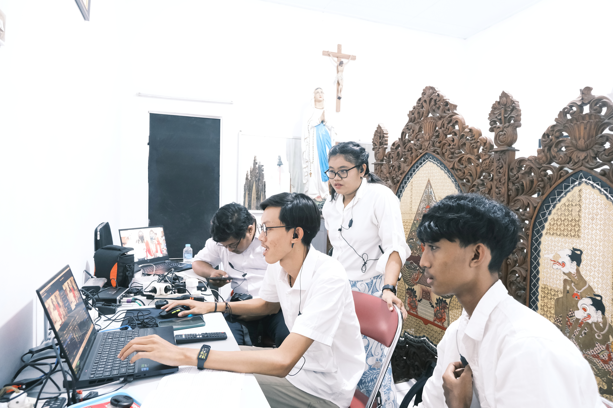
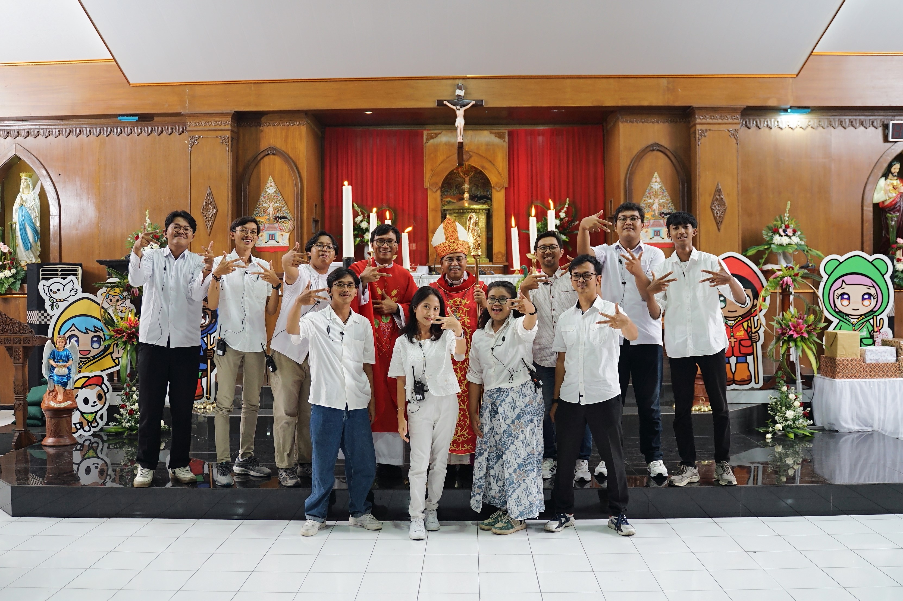
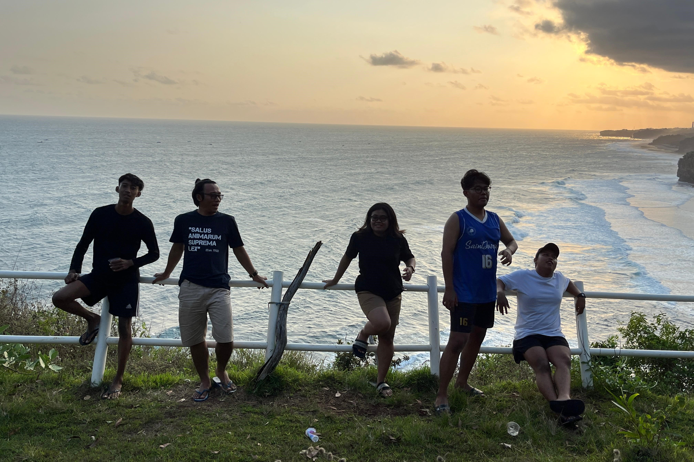

Tertarik dengan pelayanan sesuai passion? Mau melayani melalui media digital? Yuk ikut
Komsos!

Dibalik Layar Livestreaming
Operator Live Misa Penerimaan Sakramen Penguatan

Foto Bersama dengan Mgr. Robertus Rubiyatmoko
Komsos Bersama Bapa Uskup Keuskupan Agung Semarang

#DombaYangHealing!
Biar ga stress lebih baik healing dulu lur!
Kehidupan Gereja di Media Digital
Aturan Gereja Katolik mengenai Komunikasi Sosial (Komsos)
menekankan pemanfaatan media sebagai alat untuk menyebarkan Injil, memajukan martabat manusia, dan
membangun dialog serta persaudaraan.
PAROKI HATI KUDUS YESUS SUKOHARJO
Gereja Katolik Sukoharjo mulai tumbuh pada tahun 1951 yang diawali oleh 6 keluarga.